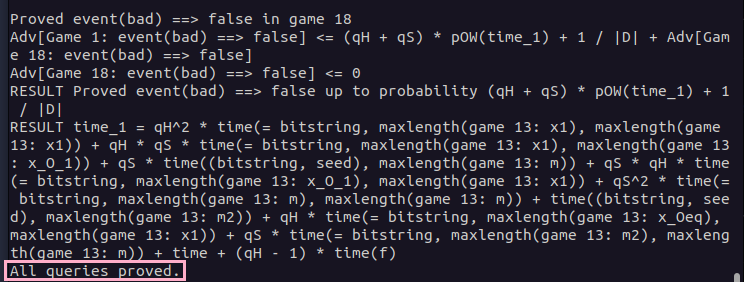

🔧 Installation
ℹ️ This tutorial only shows how to install CryptoVerif and its requirements on Ubuntu.
It is also possible to run CryptoVerif under other Linux distributions and Windows.
For information, take a look at the README file in the downloaded CryptoVerif folder.
Download CryptoVerif
CryptoVerif can be downloaded here.
- Click at the "Source" download link
- Scroll to the very bottom of the page and accept the terms
- Accept again in the popup window
- Download cryptoverif2.06.tar.gz to a location of your choosing
Install OCaml (4.03 or higher)
CryptoVerif requires OCaml version 4.03 or higher to be installed. The easiest way to install OCaml is to use its package manager opam.
add-apt-repository ppa:avsm/ppa
apt update
apt install opam
For CryptoVerif to work, it is important to install the OCaml compiler as well.
After the execution of the first command, you may be asked if you want to modify a file ~/.profile. You can answer with the default "N".
When asked if you want to add a hook, you can answer with the default "y".
opam init
eval $(opam env)
Check if the installation was successful with the following command.
ocaml -version
Install CryptoVerif
First, you need to decompress the previously downloaded cryptoverif2.06.tar.gz.
tar -xzf cryptoverif.2.06.tar.gz
Build the programs using the following commands.
cd cryptoverif2.06
./build
Further, CryptoVerif requires the OCaml cryptographic library cryptokit to be installed.
opam install cryptokit
Test for successful installation
Let’s try to run CryptoVerif on an example protocol. You need to be in the directory cryptoverif2.06 where the executable cryptoverif is located, before executing the following command.
./cryptoverif examples/basic/pfdh.cv
The end of the result should look like this:

ℹ️ Having problems with the installation? Take a look at the README file in the downloaded CryptoVerif folder.